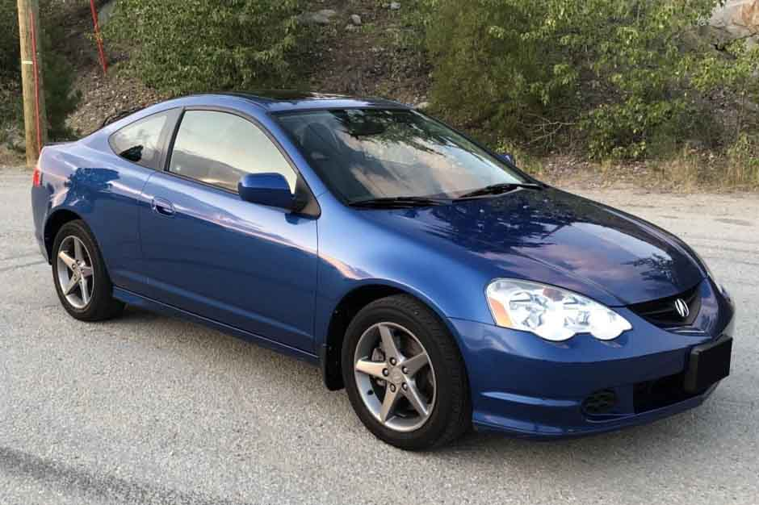
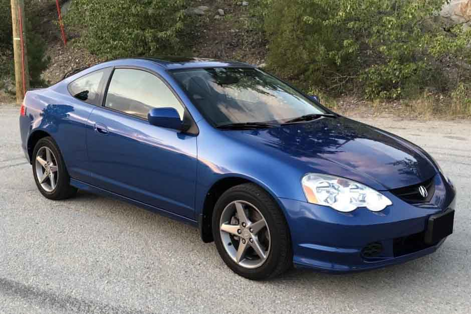

Super bolides
Écoute, George, je te le dis George, si tu n'invites pas Lorraine à ce bal, je vais le regretter pour le restant de mes jours. Attendez une minute, attendez une minute. 1h15 du matin ? Je vais avoir ce fils de pute. Je t'ai suivi. Je ne sais pas, Doc, je suppose qu'elle s'est sentie désolée pour lui parce qu'elle l'a frappé avec la voiture, elle m'a frappé avec la voiture. Calvin, pourquoi continuez-vous à m'appeler Calvin ? Quoi? Êtes-vous sûr de cette tempête ? Eh bien, Bif. Eh bien, maintenant on doit ramener ça en douce dans mon laboratoire, on doit te ramener à la maison. La nuit où je remonte dans le temps, vous obtenez- Doc. Ouais, je suis- maire. C'est une bonne idée. Je pourrais me présenter à la mairie. Hé, George, mon pote, tu n'étais pas à l'école, qu'est-ce que tu as fait toute la journée ? Euh, tu veux dire que personne ne te l'a demandé ? Ahh.
Le bolide du mois

 
